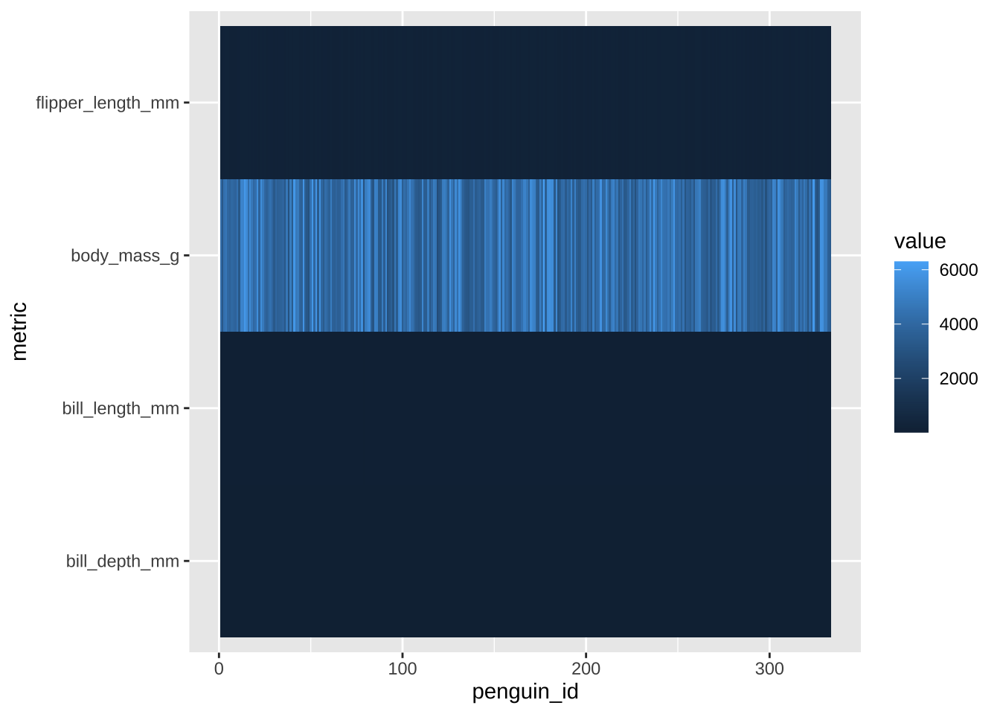
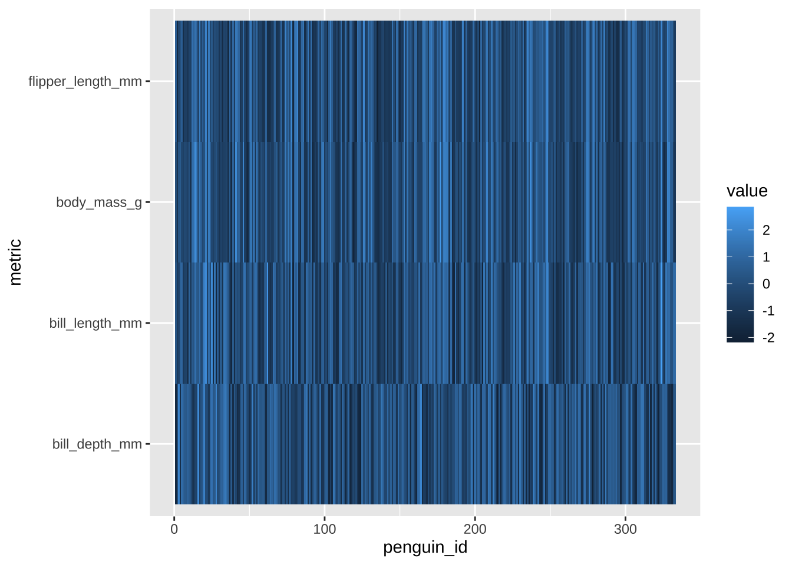
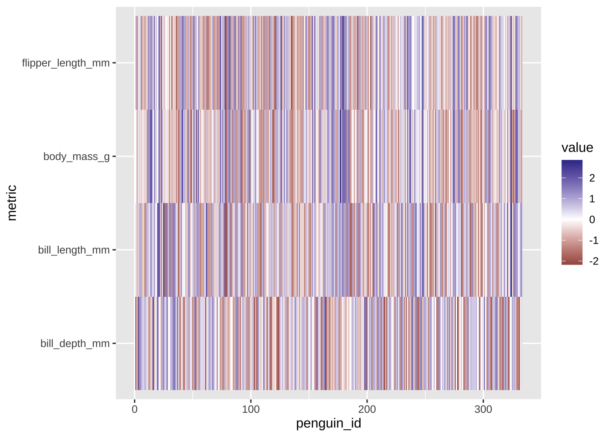
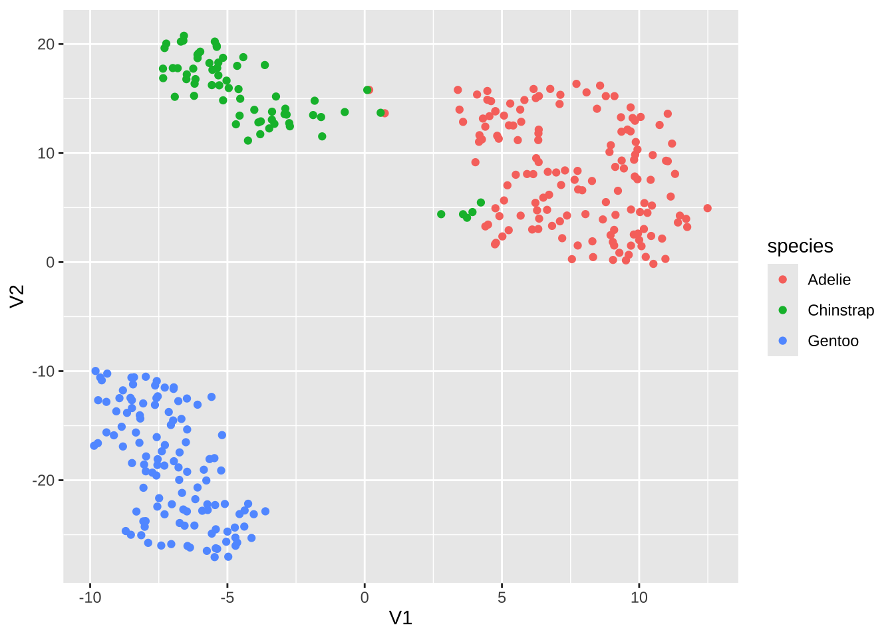
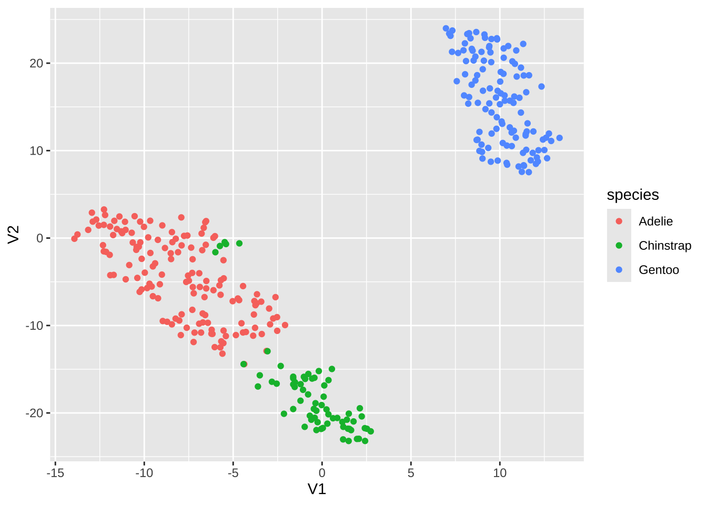

Lab 10: High-Dimensional Data & Networks
2022-06-02
Setup
library(tidyverse)
library(network)
library(ggnet)
library(igraph)
library(networkD3)
library(Rtsne)
library(ggplotify)
library(GGally)
library(palmerpenguins)
library(pheatmap)Multidimensional visualizations
As always, we begin with the Palmer Penguins:
penguins_working <- penguins %>% na.omit # get rid of any with missing data
penguins_working <- penguins_working %>% cbind(penguin_id=sample(1:nrow(penguins_working))) # compute a penguin ID column
glimpse(penguins_working)## Rows: 333
## Columns: 9
## $ species <fct> Adelie, Adelie, Adelie, Adelie, Adelie, Adelie, Adel…
## $ island <fct> Torgersen, Torgersen, Torgersen, Torgersen, Torgerse…
## $ bill_length_mm <dbl> 39.1, 39.5, 40.3, 36.7, 39.3, 38.9, 39.2, 41.1, 38.6…
## $ bill_depth_mm <dbl> 18.7, 17.4, 18.0, 19.3, 20.6, 17.8, 19.6, 17.6, 21.2…
## $ flipper_length_mm <int> 181, 186, 195, 193, 190, 181, 195, 182, 191, 198, 18…
## $ body_mass_g <int> 3750, 3800, 3250, 3450, 3650, 3625, 4675, 3200, 3800…
## $ sex <fct> male, female, female, female, male, female, male, fe…
## $ year <int> 2007, 2007, 2007, 2007, 2007, 2007, 2007, 2007, 2007…
## $ penguin_id <int> 20, 277, 45, 125, 244, 174, 28, 44, 122, 73, 330, 29…Pairwise bivariate plot
One way to start: a “pairwise plot” grid of bivariate plots of all
variables against each other. ggpairs automates this:
penguins_working %>% ggpairs(columns=c("flipper_length_mm", "bill_length_mm", "bill_depth_mm", "body_mass_g" ))
Note that this sort of plot can be very useful for exploratory data analysis, but is of limited use when it comes to presentations, posters, publications, etc.
Heatmaps
Another method for visualizing a large number of dimensions
simultaneously is a heatmap. Unfortunately, this is one area where
ggplot may not be the best choice. It is certainly
possible to do a heatmap with ggplot, using
geom_tile(), but it is not really a “batteries included”
solution.
Things to note: - geom_tile() listens for x
and y aesthetics. - As usual with ggplot, we
want our data to be in a “long” (rather than “wide”) layout, so we’ll
need to use pivot_longer()
penguins_working %>% select(-species, -island, -sex, -year) %>%
pivot_longer(-penguin_id, names_to="metric", values_to = "value") %>%
ggplot(aes(x=penguin_id, y=metric, fill=value)) + geom_tile()
Issues of scale
Note that because our different variables are at different scales,
the colors on the heatmap are not particularly useful at this point. For
this reason, heatmaps usually normalize all of their data to be on a
common scale (or get fancy with color scales for different rows/columns,
though this does begin to defeat the purpose of using a heatmap in the
first place). Let’s re-scale our variables using mutate(),
we use across here to tell mutate() to apply a
function to multiple columns.
penguins_working %>% select(-species, -island, -sex, -year) %>%
mutate(across(-penguin_id, scale)) %>%
pivot_longer(-penguin_id, names_to="metric", values_to = "value") %>%
ggplot(aes(x=penguin_id, y=metric, fill=value)) +geom_tile()
The next thing to note is that our scaled data have a natural and
meaningful zero point, which means that this is a good use-case for a
two-tone diverging color scale, which we can get usign
scale_fill_gradient2().
penguins_working %>% select(-species, -island, -sex, -year) %>%
mutate(across(-penguin_id, scale)) %>%
pivot_longer(-penguin_id, names_to="metric", values_to = "value") %>%
ggplot(aes(x=penguin_id, y=metric, fill=value)) +geom_tile() + scale_fill_gradient2()
A non-ggplot option
There are numerous other things we might want to do with a heatmap,
including adding dendrogram/cluster diagrams, additional annotations,
etc. ggplot doesn’t really make this easy, but fortunately
there are numerous non-ggplot options. One that I quite
like is pheatmap:
penguins_working %>% select(-species, -island, -sex, -year, -penguin_id) %>% pheatmap
“Out of the box”, pheatmap also does not scale our data;
unlike ggplot, however, it will not force us to do it “by
hand”. It has numerous parameters, one of which controls data scaling;
we can specify whether we want columns or rows to be scaled:
penguins_working %>% select(-species, -island, -sex, -year, -penguin_id) %>%
pheatmap(scale="column")
Things to note - By default, pheatmap will reorganize
the data according to the clustering results (unlike
ggplot/geom_tile(), which will leave the data
as-is) - pheatmap isn’t designed to work with dataframes
(though it can); rather, it expects matrices, where each
“sample” is a column - So if you want to swap rows and columns, you’ll
want to use t() to transpose your data:
penguins_working %>% select(-species, -island, -sex, -year) %>% column_to_rownames("penguin_id") %>% as.matrix %>% t %>% pheatmap(scale="row") # note that we need to change what we're scalingpheatmap is endlessly customizable; for example, we can
disable labels on columns, since here there are too many for them to be
legible:
penguins_working %>% select(-species, -island, -sex, -year) %>% column_to_rownames("penguin_id") %>% t %>%
pheatmap(scale="row", show_colnames = FALSE)
Additional layers of data
One nice feature of pheatmap is its annotation
capabilities; we can compute additional layers of data, and it will
include them as additional layers on the heatmap.
hm.annotation.df <- penguins_working %>% column_to_rownames("penguin_id") %>% select(species) # a data frame with rownames that match up with our main data's
penguins_working %>% select(-species, -island, -sex, -year) %>% column_to_rownames("penguin_id") %>% t %>%
pheatmap(scale="row", show_colnames = FALSE, annotation_col = hm.annotation.df)
We can have multiple levels of annotations:
hm.annotation.df <- penguins_working %>% column_to_rownames("penguin_id") %>% select(species, sex) # annotation by species _and_ sex
penguins_working %>% select(-species, -island, -sex, -year) %>% column_to_rownames("penguin_id") %>% t %>%
pheatmap(scale="row", show_colnames = FALSE, annotation_col = hm.annotation.df) 
`pheatmap is, again, endlessly customizable; one handy thing is that we can tell it to “break up” the spacing of the map a little bit based on the cut points in the clustering:
hm.annotation.df <- penguins_working %>% column_to_rownames("penguin_id") %>% select(species, sex) # annotation by species _and_ sex
penguins_working %>% select(-species, -island, -sex, -year) %>% column_to_rownames("penguin_id") %>% t %>%
pheatmap(scale="row", show_colnames = FALSE, annotation_col = hm.annotation.df,
cutree_cols = 3, cutree_rows = 3)
Recall that pheatmap’s output is not a
ggplot object, so ggsave etc. won’t work… if we really need
it to be, we can convert it:
hm.ggplt <- penguins_working %>% select(-species, -island, -sex, -year) %>% column_to_rownames("penguin_id") %>% t %>%
pheatmap(scale="row", show_colnames = FALSE, annotation_col = hm.annotation.df, cutree_cols = 3, cutree_rows = 3) %>%
as.ggplot
# now that it's a ggplot object, we can do certain things to it using ggplot commands:
hm.ggplt + labs(title="Title from ggplot", caption = "Caption from ggplot!")
If wneeded to, we could now combine with other ggplot objects using e.g. cowplot, etc.
Dimensionality Reduction
When we have many dimensions, it can be helpful to come up with a lower-dimensional space to use for visualization and analysis. There are many ways to do this; and note that the Palmer Penguins dataset doen’t really have that many dimensions, so this is really just a demonstration of how you might perform this sort of analysis rather than an actual use case. :-)
We will begin with Principal Components Analysis:
for.pca <- penguins_working %>% select(-species, -island, -sex, -year, -penguin_id)
# compute PCA
pc <- for.pca %>% prcomp(center=TRUE, scale=TRUE)
pc # long but useful output## Standard deviations (1, .., p=4):
## [1] 1.6569115 0.8821095 0.6071594 0.3284579
##
## Rotation (n x k) = (4 x 4):
## PC1 PC2 PC3 PC4
## bill_length_mm 0.4537532 -0.60019490 -0.6424951 0.1451695
## bill_depth_mm -0.3990472 -0.79616951 0.4258004 -0.1599044
## flipper_length_mm 0.5768250 -0.00578817 0.2360952 -0.7819837
## body_mass_g 0.5496747 -0.07646366 0.5917374 0.5846861Note that we have have one “Principal Component” for each input dimension, so we have not actually reduced our dimensionality, yet! However, recall that in PCA the components are ordered in terms of the variance they capture, with the idea being that by using the first several we can represent most of the variance in our dataset.
# now add our PC values back
penguins.pc <- penguins_working %>% cbind(predict(pc, for.pca))
penguins.pc %>% head## species island bill_length_mm bill_depth_mm flipper_length_mm body_mass_g
## 1 Adelie Torgersen 39.1 18.7 181 3750
## 2 Adelie Torgersen 39.5 17.4 186 3800
## 3 Adelie Torgersen 40.3 18.0 195 3250
## 4 Adelie Torgersen 36.7 19.3 193 3450
## 5 Adelie Torgersen 39.3 20.6 190 3650
## 6 Adelie Torgersen 38.9 17.8 181 3625
## sex year penguin_id PC1 PC2 PC3 PC4
## 1 male 2007 20 -1.850808 -0.03202119 0.23454869 0.5276026
## 2 female 2007 277 -1.314276 0.44286031 0.02742880 0.4011230
## 3 female 2007 45 -1.374537 0.16098821 -0.18940423 -0.5278675
## 4 female 2007 125 -1.882455 0.01233268 0.62792772 -0.4721826
## 5 male 2007 244 -1.917096 -0.81636958 0.69999797 -0.1961213
## 6 female 2007 174 -1.770356 0.36567266 -0.02841769 0.5046092We can see that if we plot the first few components against one another, much of the structure of the dataset is largely preserved (at least, the parts that are linear in nature):
penguins.pc %>% ggplot(aes(x=PC1, y=PC2, color=species)) + geom_point()
penguins.pc %>% ggplot(aes(x=PC1, y=PC3, color=species)) + geom_point()
penguins.pc %>% ggpairs(mapping=aes(color=species), columns=c("PC1", "PC2", "PC3", "PC4"))For non-linear dimensionality reduction, we have many options; one popular one is “T-Distributed Stochastic Neighbor Embedding”, or t-SNE. It does a very good job at handling a moderate number of dimensions (up to, say, 50) though can be run on much higher-dimensional data.
The main thing to note about t-SNE is that it is stochastic,
meaning that different “runs” will produce different results. The
overall patterns/structure in the resulting lower-dimensional data will
be very similar, but it will look different. In the interests of
reproducibility, always make sure to initialize your random number
generator in a consistent manner, using set.seed()!
set.seed(42)
penguin.tsne <- for.pca %>% mutate(across(everything(), scale)) %>% Rtsne()
penguin.tsne$Y %>% as.data.frame %>% cbind(penguins_working) %>% ggplot(aes(x=V1, y=V2, color=species)) + geom_point()
As an example, look what happens if we run Rtsne() a
second time:
penguin.tsne2 <- for.pca %>% mutate(across(everything(), scale)) %>% Rtsne()
penguin.tsne2$Y %>% as.data.frame %>% cbind(penguins_working) %>% ggplot(aes(x=V1, y=V2, color=species)) + geom_point()
We get a completely differnet arrangement- though note some similarities, in that there are a few stray Chinstrap penguins that get grouped in with the Adelies.
Running a third time, we will get a third arrangement:
penguin.tsne3 <- for.pca %>% mutate(across(everything(), scale)) %>% Rtsne()
penguin.tsne3$Y %>% as.data.frame %>% cbind(penguins_working) %>% ggplot(aes(x=V1, y=V2, color=species)) + geom_point()If we reset our RNG seed, we can get back our original layout:
set.seed(42)
penguin.tsne4 <- for.pca %>% mutate(across(everything(), scale)) %>% Rtsne()
penguin.tsne4$Y %>% as.data.frame %>% cbind(penguins_working) %>% ggplot(aes(x=V1, y=V2, color=species)) + geom_point()
Networks
Note that this part of the walk-through is not particularly useful
except as an example of how to use igraph; the actual
analysis does not work out very well, and the graphs aren’t of very much
interest.
Data ingest & setup
This file was generated using the SciVal bibliographic database, and contains information about publications with at least one OHSU-affiliated author.
d <- read_csv("data/ohsu_pubs.csv") %>% janitor::clean_names()## Rows: 17117 Columns: 12
## ── Column specification ────────────────────────────────────────────────────────
## Delimiter: ","
## chr (11): Title, Authors, Scopus Author Ids, Scopus Source title, DOI, EID, ...
## dbl (1): Year
##
## ℹ Use `spec()` to retrieve the full column specification for this data.
## ℹ Specify the column types or set `show_col_types = FALSE` to quiet this message.glimpse(d)## Rows: 17,117
## Columns: 12
## $ title <chr> "2015 American Thyroid Association Manag…
## $ authors <chr> "Haugen, B.R.| Alexander, E.K.| Bible, K…
## $ scopus_author_ids <chr> "7005966885| 7201383680| 6603907750| 700…
## $ year <dbl> 2016, 2016, 2016, 2016, 2017, 2018, 2017…
## $ scopus_source_title <chr> "Thyroid", "The Lancet", "Autophagy", "T…
## $ doi <chr> "10.1089/thy.2015.0020", "10.1016/S0140-…
## $ eid <chr> "2-s2.0-84954538661", "2-s2.0-8499409204…
## $ scopus_affiliation_i_ds <chr> "60000221| 60016782| 60002746| 60005558|…
## $ scopus_affiliation_names <chr> "University of Colorado Boulder| Brigham…
## $ scopus_author_id_first_author <chr> "7005966885", "57223885848", "7004321762…
## $ scopus_author_id_last_author <chr> "7006270360", "57209027746", "5720817050…
## $ topic_name <chr> "Thyroglobulin,Thyrotropin Alfa,Thyroid …We can easily identify publications with a first or last author with an OHSU affiliation:
ohsu.scopus.id <- "60016733"
d.first.au <- d %>% mutate(first_aff_id=str_extract(scopus_affiliation_i_ds, "^[^\\|]*"), last_aff_id=str_extract(scopus_affiliation_i_ds, "[^\\|]*$")) %>%
mutate(is_ohsu_pub=case_when(
first_aff_id == ohsu.scopus.id | last_aff_id == ohsu.scopus.id ~ TRUE, TRUE ~ FALSE
))
# as a sanity check, how many OHSU first/last author publications are there in the set?
d.first.au %>% select(is_ohsu_pub) %>% group_by(is_ohsu_pub) %>% tally## # A tibble: 2 × 2
## is_ohsu_pub n
## <lgl> <int>
## 1 FALSE 11597
## 2 TRUE 5520Let’s build a graph where the nodes are journals, and edges shared authorship. That is, journals X and Y will get an edge if at least one author has published in both; weights of the edges will represent the number of shared authors.
To get there, we will need several steps of processing. Currently, each row of the dataset is a single publication, but within each publication there is a delimited list of authors and institutional affiliations. We want to extract that list and make it into a nested data frame:
prep_au_df <- function(some_pub) {
au_list = str_split(some_pub$authors, "\\|")
# print(au_list)
au_id = str_split(some_pub$scopus_author_ids, "\\|")
tibble(author_name=au_list, author_id=au_id)
}
# let's only look at publications where the first or last author is an OHSU author
pubs.to.use <- d.first.au %>% filter(is_ohsu_pub==TRUE)
d.with.expanded.author.info <- pubs.to.use %>% pmap_dfr(function(...) {
current <- tibble(...)
current %>% prep_au_df
}) %>% bind_cols(pubs.to.use, .)Now, we will turn that into a dataframe that has one row per-author-per-publication, with the journal title and author ID. This will form the basis for our graph:
author.id.and.name <- d.with.expanded.author.info %>% select(scopus_source_title, author_id) %>% unnest(author_id)
author.id.and.name %>% head## # A tibble: 6 × 2
## scopus_source_title author_id
## <chr> <chr>
## 1 Journal of Pain "9334863700"
## 2 Journal of Pain " 7403582623"
## 3 Journal of Pain " 7005602051"
## 4 Journal of Pain " 55430613700"
## 5 Journal of Pain " 6701572541"
## 6 Journal of Pain " 15134993200"Compute node and edge list
The graphing libraries we will be working with can represent graphs in several ways, but the most common way is as an edgelist and a list of vertices. We’ll make the edgelist by joining our author/journal-title dataframe on itself a couple of times:
journal_graph <- author.id.and.name %>% inner_join(author.id.and.name, by="author_id") %>% filter(scopus_source_title.x != scopus_source_title.y) %>% rename(source=scopus_source_title.x, dest=scopus_source_title.y) %>%
group_by(source, dest) %>% summarise(n.pubs=n()) %>% ungroup## `summarise()` has grouped output by 'source'. You can override using the
## `.groups` argument.sources <- journal_graph %>% distinct(source) %>% rename(label=source)
destinations <- journal_graph %>% distinct(dest) %>% rename(label=dest)
# list of all nodes
nodes <- full_join(sources, destinations, by="label")
nodes <- nodes %>% mutate(id=1:nrow(nodes)) %>% select(id, everything())
journal_graph <- journal_graph %>% rename(weight=n.pubs)
edges <- journal_graph %>% left_join(nodes, by=c("source"="label")) %>% rename(from=id)
edges <- edges %>% left_join(nodes, by=c("dest" = "label")) %>% rename(to=id)
edges <- edges %>% select(from, to, weight)
edges %>% head## # A tibble: 6 × 3
## from to weight
## <int> <int> <int>
## 1 1 853 2
## 2 2 205 1
## 3 2 236 1
## 4 2 1242 1
## 5 2 1376 1
## 6 2 1536 1igraph: The swiss-army knife for graphs
At this point, we can transform our data from a simple dataframe into
an actual graph object; igraph is a very useful R library
with many routines for manipulating graphs (computing metrics,
identifying sub-graphs, etc.). It can read graphs represented in many
ways, one of which is from a dataframe with edges:
library(igraph)
# make network object
first.with.igraph <- graph_from_data_frame(d=edges, vertices=nodes, directed=FALSE)Now that it’s loaded, we can plot our graph; note that this graph is too big to usefully plot this way!
set.seed(42)
plot(first.with.igraph, layout=layout_with_graphopt)
What if we try filtering our graph, to only include edges representing at least four shared authors?
journal_graph <- journal_graph %>% filter(weight > 4)
edges <- journal_graph %>% left_join(nodes, by=c("source"="label")) %>% rename(from=id)
edges <- edges %>% left_join(nodes, by=c("dest" = "label")) %>% rename(to=id)
edges <- edges %>% select(from, to, weight)
edges## # A tibble: 6,364 × 3
## from to weight
## <int> <int> <int>
## 1 3 234 11
## 2 6 387 17
## 3 7 99 8
## 4 7 148 26
## 5 7 155 50
## 6 7 360 11
## 7 7 399 6
## 8 7 423 5
## 9 7 443 8
## 10 7 674 8
## # … with 6,354 more rowsnodes2<-edges %>% stack(select=c(from, to)) %>% select(-ind) %>% distinct %>% inner_join(nodes, by=c("values"="id")) %>% rename(id=values)
second.with.igraph <- graph_from_data_frame(d=edges, vertices=nodes2, directed=FALSE)
plot(second.with.igraph, layout=layout_with_graphopt)
This is only moderately better; again, graphs with this many nodes are not especially effective to visualize, generally-speaking.
Up to this point, we have used base-R plotting; it is worth knowing
about ggraph, a more “modern” graphing library built on top
of ggplot. It behaves very similarly to ggplot
in that it uses geoms, aesthetic mappings, etc.
library(ggraph)
second.with.igraph %>% ggraph(layout="igraph", algorithm="kk") + geom_edge_link(alpha=0.1) + geom_node_point()